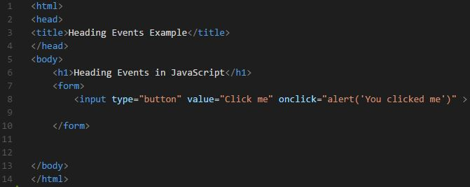
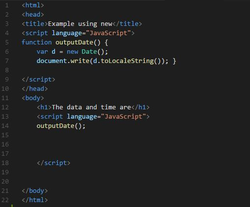
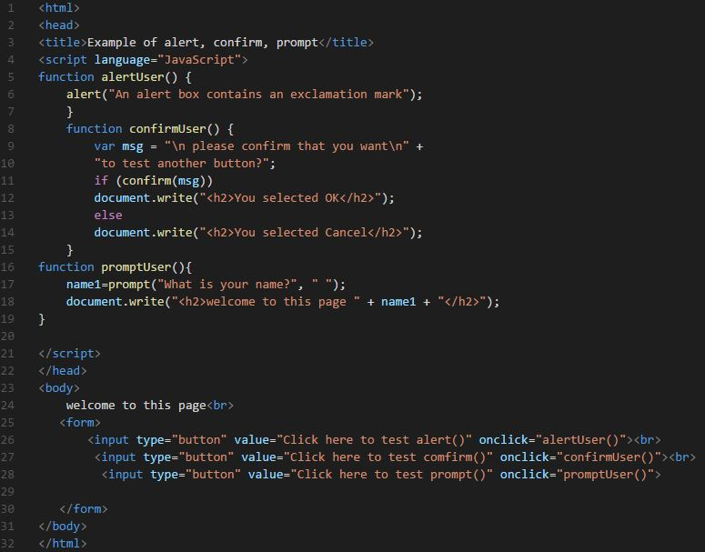
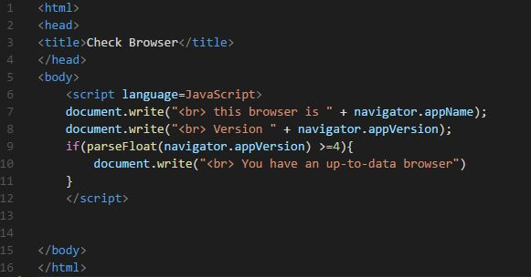
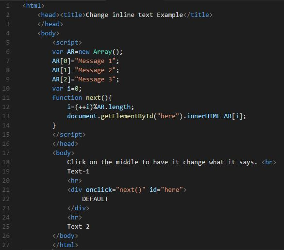

JavaScript
ข้อที่ 1

| บรรทัดที่แปดพิมพ์แสดงค่าอัพเดตวัน/เดือน/ปี และเวลาในปัจจุบัน โดยใช้คำสั่ง document.lastModified |
output!

ข้อที่ 1
| บรรทัดที่แปดพิมพ์แสดงค่าอัพเดตวัน/เดือน/ปี และเวลาในปัจจุบัน โดยใช้คำสั่ง document.lastModified |
output!
ข้อที่ 2
| บรรทัดที่แปด พิมพ์สตริง <h1>Factorials</h1> |
| บรรทัดที่เก้า วนลูป 9 รอบ และกำหนดค่าของตัวแปร fact = fact * i |
| บรรทัดที่สิบ พิมพ์ค่าของตัวแปร i ต่อด้วย ! = และค่าของตัวแปร fact |
| บรรทัดที่สิบเอ็ด พิมพ์ข้อความ <br> |
output!
ข้อที่ 3

| บรรทัดที่แปด input type="button" เป็นปุ่มธรรมดา ส่วนมาก จะใส่โค้ด javascript เพื่อให้ปุ่มทำงานตาม event ต่าง ๆ |
| value="Click me" เป็นค่าของข้อมูลที่ใส่คำว่า Click me |
| onclick="alert('You clicked me')" เรียกใช้ onclickปุ่มจะเด้งขึ้นมาตรวจสอบการยืนยันว่าจะทำสิ่งนี้ใช่หรือไม่ |
output!
ข้อที่ 4

| บรรทัดที่ห้า สร้าง function outputDate() |
| บรรทัดที่หก var d = new Data() สร้าง object ข้อมูลวันที่และเวลา |
| บรรทัดที่เจ็ด document.write(d.toLocaleString()) พิมพ์แสดงค่าวันที่และเวลาปัจจุบันโดยแปลงข้อมูลเป็นสตริง |
| บรรทัดที่สิบสี่ เรียกใช้ฟังก์ชัน outputDate() |
output!
ข้อที่ 5

| บรรทัดที่ห้าและหก ใช้function alertUser() โดยให้เด้งหน้าต่างใหม่แล้วมีข้อความขึ้นมาว่า "An alert box contains an exclamation mark" |
| บรรทัดที่แปด ใช้function confirmUser() |
| บรรทัดที่เก้า ให้ตัวแปร msg เก็บข้อความ "please confirm that you want to test another button?" |
| บรรทัดที่สิบเอ็ด if (confirm(msg)) ให้ if เช็คการยืนยันข้อความแล้วส่งค่า msg เข้ามา |
| บรรทัดที่สิบสอง ถ้าใช่ให้พิมพ์ข้อความ <h2>You selected OK </h2> |
| บรรทัดที่สิบสามและสิบสี่ ถ้าไม่ใช่ให้พิมพ์ข้อความ <h2>You selected Cancel </h2> |
| บรรทัดที่สิบหก ใช้function promptUser() |
| บรรทัดที่สิบเจ็ด ให้ตัวแปร name1 เก็บข้อความ What is your name? แล้วมีช่องว่างให้ใส่ข้อความ |
| บรรทัดที่สิบแปด ให้พิมพ์ข้อความ <h2>welcome to this page " + name1 + " </h2> แล้วต่อด้วย name1 |
output!
ข้อที่ 6

| บรรทัดที่7 ขึ้นบรรทัดและพิมพ์ข้อความ "This browser is" และ "Netscape" (ชื่อ Browser) |
| บรรทัดที่8 ขึ้นบรรทัด และพิมพ์ข้อความ "Version" และเรียกคำสั่ง navigator.appVersion (version ของ netscape)) |
| บรรทัดที่ 9 parseFloat (การแปลงค่า string หรือตัวแปรให้เป็น Number) ตรวจสอบว่า navigator.appVersion มีค่ามากกว่าหรือเท่ากับ 4 หรือไม่ |
| บรรทัดที่10 ถ้าเป็นจริง จะขึ้นบรรทัดใหม่ และพิมพ์ข้อความ "You have an up-to-date browser" |
output!
ข้อที่ 7
| บรรทัดที่7 ประกาศฟังก์ชั่น windowHeight |
| บรรทัดที่8 ตรวจสอบว่าใช้กับ Browser IE หรือไม่ |
| บรรทัดที่9 ถ้าเข้าเงื่อนไข จะคืนค่าความสูงหน้าจอกลับมา |
| บรรทัดที่10 ตรวจสอบว่าใช้กับ Browser Netscape หรือไม่ |
| บรรทัดที่11 ถ้าเข้าเงื่อนไข จะคืนค่าความสูงหน้าจอกลับมา |
| บรรทัดที่12 ถ้าไม่ตรงเงื่อนไข |
| บรรทัดที่13 ให้คืนค่า 0 กลับมา |
| บรรทัดที่17 ตรวจสอบว่าความสูงหน้าจอมากกว่าหรือเท่ากับ 300 หรือไม่ |
| บรรทัดที่18 ถ้าเข้าเงื่อนไข จะลิ้งค์ไปยังหน้า https://www.google.com |
| บรรทัดที่19 ถ้าไม่เข้าเงื่อนไข |
| บรรทัดที่20 ให้ลิ้งค์ไปหน้า lab04 |
output!
ข้อที่ 8

| บรรทัดที่ห้า สร้าง function outputDate() |
| บรรทัดที่หก ตรวจสอบ document ชนิด images (รูปภาพ) |
| บรรทัดที่หก ถ้าจริง ให้ document.images["docs"].src = docsOn.src |
| บรรทัดที่เก้า สร้าง function unhighlightdocs() |
| บรรทัดที่สิบ ตรวจสอบ document ชนิด images (รูปภาพ) |
| บรรทัดที่สิบ ถ้าจริง ให้ document.images["docs"].src = docsOff.src |
| บรรทัดที่สิบสอง ตรวจสอบ document ชนิด images (รูปภาพ) |
| บรรทัดที่สิบสาม ถ้าจริง ให้ตัวแปร docsOn เก็บค่า Images (รูปภาพ) |
| บรรทัดที่สิบสี่ ตัวแปร docsOn.src เก็บไฟล์รูปภาพ ชื่อ gg_color.png |
| บรรทัดที่สิบห้า ถ้าจริง ให้ตัวแปร docsOff เก็บค่า Images (รูปภาพ) |
| บรรทัดที่สิบหก ตัวแปร docsOff.src เก็บไฟล์รูปภาพ ชื่อ gg_gray.png |
| บรรทัดที่ยี่สิบสาม ให้ลิงค์ไปยัง www.google.com |
| บรรทัดที่ยี่สิบสี่ ใเมื่อเอาเคอร์เซอร์ไปบริเวณรูปภาำจะเรียกฟังก์ชั่น highlightdocs() และเมื่อกดรูปภาำจะเรียกฟังก์ชั่น unhighlightdocs() |
| บรรทัดที่ยี่สิบห้า ใส่รูปภาพไฟล์ชื่อ gg_gray.png ตั้งชื่อว่า docs ให้มีความสูง (Height) 250, กว้าง (Width) 250 และให้เส้นขอบ =0 |
output!
ข้อที่ 9

| บรรทัดที่ห้า สร้าง function doMoveBrowser() รับค่า form |
| บรรทัดที่หก ให้ parent เก็บค่าที่ตั้งของลิงค์ แล้วเก็บการสร้าง form ประเภท list (รายการ) มีรายการตามฟังก์ชั่นชื่อ getSelectedValue() |
| บรรทัดที่แปด สร้าง function getSelectedValue() |
| บรรทัดที่เก้า รีเทิร์นค่า document ชื่อ form1 ประเภท list (รายการ) ที่คำสั่ง selectedIndex กลับ |
| บรรทัดที่สิบเอ็ด สร้าง function showURL(form) |
| บรรทัดที่สิบสอง สร้าง form ประเภท TextBox (กล่องข้อความ) ให้เก็บการสร้าง form ประเภท list (รายการ) มีรายการตามฟังก์ชั่นชื่อ getSelectedValue() |
| บรรทัดที่สิบเก้า สร้าง form ชื่อ form1 |
| บรรทัดที่ยี่สิบ ประเภท list (รายการ) เรียกใช้ฟังก์ชั่นชื่อ showURL(this.form) |
| บรรทัดที่ยี่สิบเอ็ด รายการที่ 1 แสดงข้อความ "Where do you want to go today?" |
| บรรทัดที่ยี่สิบสอง รายการที่ 2 เก็บค่า http://www.google.com และแสดงข้อความ "Google" |
| บรรทัดที่ยี่สิบสาม รายการที่ 3 เก็บค่า http://www.buu.ac.th และแสดงข้อความ "Buu University" |
| บรรทัดที่ยี่สิบสี่ รายการที่ 4 เก็บค่า http://www.informatics.buu.ac.th และแสดงข้อความ "Faculty of Informatics" |
| บรรทัดที่ยี่สิบหก สร้างปุ่มกด ประเภท button เก็บค่า Go ถ้ากดปุ่มจะเรียกฟังก์ชั่นชื่อ doMoveBrowser(this.form) |
| บรรทัดที่ยี่สิบเจ็ด สร้างปุ่มกด ประเภท reset เก็บค่า Reset |
| บรรทัดที่ยี่สิบแปด สร้างกล่องข้อความ ประเภท TextBox ขนาด 40 px |
output!
ข้อที่ 10

| บรรทัดที่หก var AR=new Array() สร้างArray ใหม่ขึ้นมา |
| บรรทัดที่เจ็ด AR[0]="Message 1" ให้ AR ช่องที่0 เก็บข้อความที่ป้อนเข้ามาครั้งแรกไว้ |
| บรรทัดที่แปด AR[1]="Message 2" ให้ AR ช่องที่1 เก็บข้อความที่ป้อนเข้ามาครั้งที่สองไว้ |
| บรรทัดที่เก้า AR[2]="Message 3" ให้ AR ช่องที่ 2 เก็บข้อความที่ป้อนเข้ามาครั้งที่สามไว้ |
| บรรทัดที่สิบ var i=0 ให้ตัวแปร i=0 |
| บรรทัดที่สิบเอ็ด สร้าง function next() |
| บรรทัดที่สิบสอง ตัวแปร i เพิ่มชึ้นรอบละ 1 และหารเอาเศษกับความยาวของตัวแปร AR |
| บรรทัดที่สิบสาม ทำตามคำสั่ง document getElementById("here").innerHTML = AR[i] |
| บรรทัดที่ยี่สิบเอ็ด เมื่อคลิกที่ข้อความ"DEFAULT" จะเรียกใช้ฟังก์ชั่น next() และจะเปลี่ยนข้อความตั้งแต่ Message 1 -3 |
output!
Click on the middle to have it change what it says.